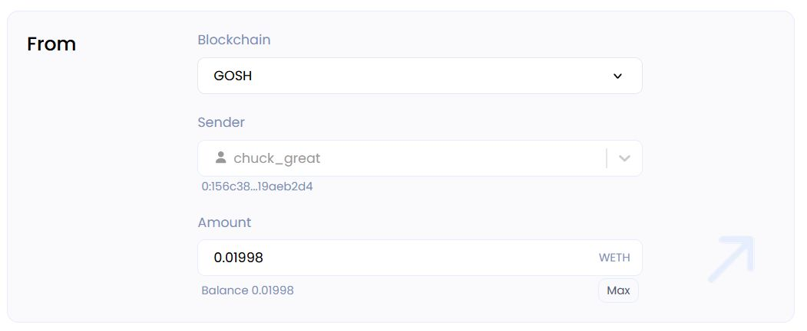

User Guide
Any DAO on GOSH can become Ethereum Layer 2 with a click of a button.
Info
This is only possible in the GOSH version of at least 6.1.0
Deposit ETH to GOSH
To make a transfer between wallets, go to the Ethereum tab:

or select this section by clicking on your profile in the right corner:

Now we can test the ETH transfer in the alpha version.
Click on:

the "Cross-chain transfer" page will open for you.
In the Accounts section, click Connect to log into a software cryptocurrency wallet MetaMask

Enter the amount you want to send
Note
The amount must be greater than or equal to 0.01
Warning
The contract has not been formally verified yet. Please do not send a lot!

Enter the wallet address or GOSH username of the recipient for the transfer. The Amount field will indicate the transferred amount (minus the commission) that will be credited to the recipient's wallet in GOSH.
After depositing the GOSH contract on Ethereum, you will receive the corresponding amount of WETH tokens (Wrapper Ethereum tokens) in your GOSH network wallet.

Withdraw wrapped ETH to Ethereum
To withdraw tokens from GOSH to Ethereum, go to the Ethereum tab on the DAO page
or select this section by clicking on your profile in the right corner:
the "Cross-chain transfer" page will open for you:

In the Accounts section, click Connect to log into a software cryptocurrency wallet MetaMask

Info
In the future, the balances of your wallets on GOSH and Ethereum will be displayed here
In the From section, select the GOSH blockchain and enter the sender's wallet address or GOSH username along with the amount of WETH tokens you wish to withdraw:

In the To section, make sure to choose the Ethereum blockchain network and verify the Receiver's wallet address for accuracy before proceeding. The ETH amount will be automatically calculated.
Please click on the Next button to proceed.
On the right, in the Summary section, you can see information about the amount of assets received and sent.

The amount of the expected commission for the transfer and and the time before the withdrawal of assets is also indicated
Info
Tokens are withdrawn every 3 hours
Please wait until the process of sending WETH tokens and receiving ETH fully completed

Deposit ERC20 to GOSH
To make a transfer ERC20 tokens, go to the Ethereum tab:
or select this section by clicking on your profile in the right corner:
Click on:
the Cross-chain transfer page will open for you.
Let's look at the token transfer using the example of the USDC.
In the From section, select the token to transfer to GOSH
To log into a software cryptocurrency wallet MetaMask, you can either click on Connect wallet or go to the Accounts section and click on Connect.
Enter the amount you want to send
Note
The amount must be greater than or equal to 0.011

Enter the wallet address or GOSH username of the recipient for the transfer.
The Amount field will indicate the transferred amount (minus the commission) that will be credited to the recipient's wallet in GOSH.
The Summary section will display detailed information about the transfer


And click Next button
The transfer process has three sub-steps.
The first one is to approve tokens, followed by deposit tokens, and finally, waiting for the transfer to be completed.
Once you click on the Approve button, you'll be authorizing the ELOCK contract to initiate the transfer of the specified amount.
In the opened MetaMask window, confirm the necessary parameters for the transfer.
Click on the Deposit button and then check and confirm the transfer parameters in your MetaMask wallet.

It's important to ensure that the transfer is being made to the ELOCK contract at this step.
After that, you just need to wait for the transfer to be completed.

After successful completion of the transfer, you will see a confirmation:
If you want to view your asset balance, you can find it in the Accounts section. To do this select the relevant token in the "From" tab.
Withdraw ERC20 to Ethereum
To withdraw ERC20 tokens from GOSH to Ethereum, go to the Ethereum tab on the DAO page and log into a software cryptocurrency wallet MetaMask
In the From section, select the asset that you want to withdraw to Ethereum

The available assets will be displayed in the Accounts section
Enter the desired number of tokens to withdraw

The Summary section will display detailed information about the withdraw
Info
Tokens are withdrawn every 3 hours
In the To section, in the Recipient field, you must specify the recipient's Ethereum wallet address.
The number of tokens will be calculated automatically.
Please click on the Next button to proceed.
The transfer of the ERC20 tokens from GOSH to Ethereum will take some time.
After the transfer process, you will be able to view the list of your assets that have been transferred from GOSH to Ethereum in the Your pending withdrawals section.
These assets are now located in Ethereum on the balance ELOCK contract, and you can withdraw them to your wallets by clicking on the Withdraw button.

Confirm the withdrawal of tokens to your wallet
Wait for the tokens to arrive on the balance of your Ethereum wallet